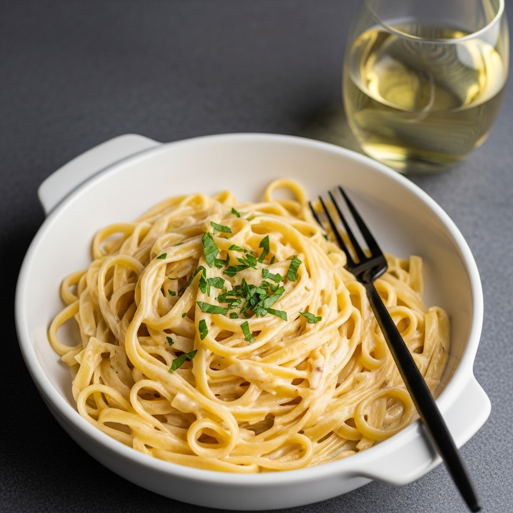

Creamy Garlic Pasta

Creamy garlic pasta recipe
Learn how to make our creamy garlic pasta recipe
Ingredients:
- 300g tagliatelle
- 20g salted butter
- 6 garlic cloves
- 150ml chicken stock
- 200ml double cream
- 2 tbsp plain flour
- 8gi5g parmesan
- 20g flat-leaf parsley
Recipe steps:
- Begin by cooking the pasta following pack instructions. Meanwhile, melt the butter in your largest frying pan. Once foaming, add the garlic and 25 twists of a black pepper mill. Cook for 4-5 mins, until the garlic is light golden and fragrant.
- Stir in the flour to form a paste. Stir for 1-2 mins, then slowly whisk in the chicken stock until you have a smooth sauce. Pour in the double cream and sprinkle in most of the parmesan. Stir until everything is melted and combined, then season to taste.
- Transfer the pasta straight into the sauce, alongside a good splash of the cooking water. Mix thoroughly, adding a little more pasta water if necessary, until you have a thick and glossy sauce.
- Divide between four bowls and serve topped with the chopped parsley and remaining parmesan.
Home